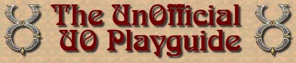
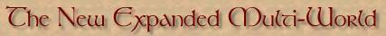

Realizing that splitting Britannia into Trammel and Felucca was not nearly enough to satisfy the thousands of players that have nothing better to do than to go on the Crossroads, Stratics and UO Vault boards and whine and complain about every facet of the game, our designers have gone back to the drawing board and come up with a solution that should satisy our players desires for an endless variety of gameplay styles. This manual is intended to help players decide in which of the new worlds they wish to live.
As we said above, two worlds was not enough, so now you will have a choice of eight (count 'em, EIGHT) worlds in which to immerse yourself in the UO gaming experience. Each of the new worlds (now referred to as 'facets') was named after one of the eight mantras from the original Ultima series. There is a description for each listed below to help you choose one best suited to your chosen style of gameplay.
This world has been completely flattened and all unnecessary trees, rocks, mountains, etc. removed to allow unlimited placement of housing. Players are allowed to own as many houses as they want and every house acts as a huge, no weight-restriction bankbox, allowing secure storage of unlimited items such as crystal balls, dried flowers, broken barrels, pillows etc. Beware that the increased server load may result in significant lag.
Ra has been specially designed for people who do not want to see anyone at all ingame. All players as well as all houses, human npcs, etc. are invisible to all other players so each player has the experience of exploring a totally unpopulated shard.
Cah is the no-rules, free-for-all facet. As soon as you enter this facet you are given a copy of UOE, and are free to participate in unlimited killing, stealing, swearing, notoriety killing, blue healing, blocking, looting, and whatever other anti-social acts you would like to participate in. All house door locks have been removed as well as secure containers, bank boxes, etc. Unattended macroing is mandatory for all players.
Ahm is the PvPr's paradise. In order to accomodate players who have come from other games such as Quake, Doom, Unreal Tournament, Half-Life etc. a huge list of new weapons has been added including assault weapons, sniper rifles, bazookas, rocket launchers, grenades, plasma bloopers, chainsaws, etc. Stat loss has been removed as well as the skill cap allowing players to reach grandmaster status in all combat disiplines. Every successful murder raises your stat cap by fifty points. While we realize this may detract somewhat from the medieval aspect of the game, who cares? right? It's a game, lighten up!
Lum is the facet to live in if you are in to polite conversation and a safe, non-violent, nurturing environment. New skills have been added such as Needlepoint, Macrame, Quilting, Floral Arranging and Black Velvet Paint-by-Number. Players are given unlimited books, quills and inkwells in order to pen their daily experiences or write that first novel. Benches have been placed throughout the facet to facilitate engaging in lively conversations and other quiet pastimes. All forms of threat such as player killing, monsters, or even high places you could fall off have been removed and the entire facet is a guarded area.
Om is the craftsperson's facet. New players are automatically given grandmaster status in any of two chosen crafts such as blacksmithing, tailoring, carpentry, etc. Each player gets a copy of inside UO and the list of craftables has been expanded to include every single tile in the game so feel free to create anything you like. Be aware that meaningful travel may be extremely difficult in this land and it is very doubtful whether any shopkeepers will have any money left to buy any of the items you create.
We like to think of this as the helpful facet, perfect for people who constantly page GMs and Councellors for help. On this shard every new player is assigned a personal GM and Councellor who will follow you around ingame and tend to your every need. Each player is assigned a fully blessed house, designed to their very own specs and furnished in any style they like. Unfortunately, we have had to up the monthly fees for playing on this facet to $5000.00 (US) a month to take care of additional staffing.
This is the real world facet. Here everything has been designed to completely mimic medieval life. If you have the unfortunate luck of your character emerging as a peasant, expect to never own anything, and live your life as an indentured farmer to some Lord who will tax away everything you grow. Time will pass at a realistic rate, meaning that if you struggle your way up to craftsman, expect to spend three days (real time) making a sword and then, having somebody offer you a chicken or ham in payment. Also expect your character to die of the plague, typhus, cholera, or some other ailment, probably before your twentieth birthday in-game.
and finally...
Well, there are the new changes, sure hope you like them, cause if you don't...TOUGH! We are fed the hell up with pandering to you bunch of whiners! If you don't like these last set of changes you will just have to re-design the game yourself, cause if we hear any more complaints we will ALL quit. That's right, you heard us, QUIT damnit! Just like L.B. and the rest. Then lets see how you get on the next time the server crashes, MWUHAHAHAHA! So from now on if you don't like the game, WE DON'T CARE...get it? Go play Busytown or Trophy Bass. Just stay the hell out of our faces. And while you're at it... GET A LIFE! Aren't you a little old to be playing computer games anyway! Sheesh! Go mow the lawn, wash your car, get a degree in brain surgery, just leave us ALONE!
Sincerely...The Dev Team.
All original design and content is © Copyright 1998, 1999, 2000, Mike Hanley a.k.a. "Tryon" - As far as you using any of the stuff on this site without my express permission in writing, let me just say this: "DON'T!" ... Any material not expressely designed or created by me may be covered by copyrights and trademarks of their respective owners.